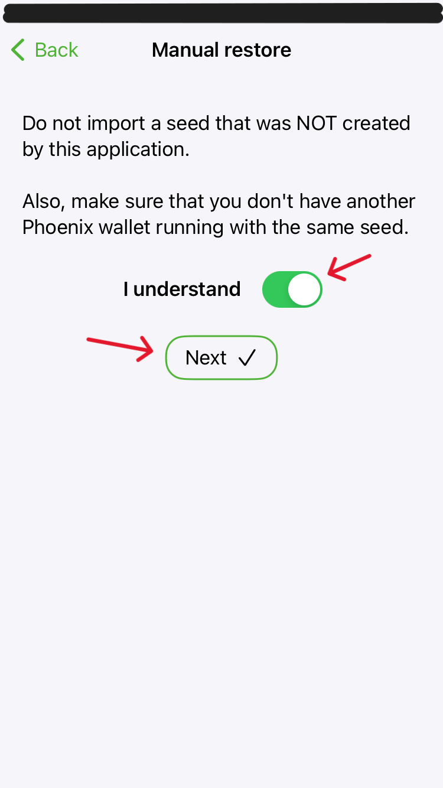
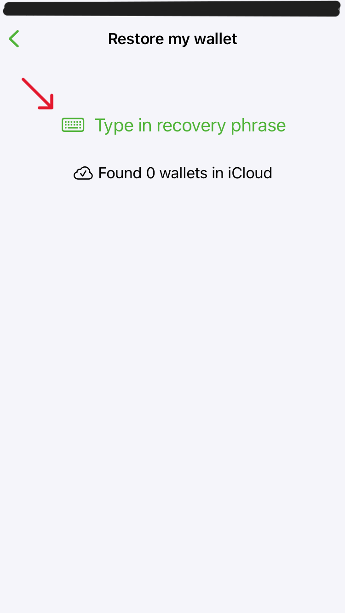

Stage 2.1: Download and
installation
For our guide we will use Phoenix wallet. Guides for Green Wallet and Blue Wallet will follow in the
future.
If you know how to install an application on your iPhone, Android or other phone of your choice, then
you can
skip to Step 4.
Step 1:
Go to your App-Store / Play-Store
Step 2:
Type "phoenix wallet" in your search bar and press the "search" button
Step 3:
Press the "download" button, once it finished, press the "open" button
Step 4: Installing Orbot App
The Orbot App will allow you to access the Tor network and connect to your nodes electrum
server later in the guide.
This is not mandatory for transactions but will improve privacy. It can however also lead to
payments not making it through if the TOR network can't be reached.
To install it simply search and download as above only this time look for "orbot".
Stage 2.2: Enabling TOR Browser
It is recommended to have TOR enabled. This is to protect your IP address from your ISP (Internet Service Provider) as
well as any other potential
observers. However if during a trade or payment connectivity problems
occur, the user may choose to disable TOR and therefore show their IP address to Phoenix Wallets
Node (ACINQ) as well as other third parties.
Disabling TOR once will result in an IP leak that can permanently make the wallet identifiable with a
person.
Step 1:
Skip or read the introduction until you reach the first buttons.
Step 2:
Press the little gear in the top right corner
Step 4:
Go to "Tor"
Press the switch to enable Tor.
Stage 2.3: Connecting Electrum
Server
If you have completed our Node guide, which is highly recommended, you will have access to your own
Electrum server. If you did not and choose not to do so now, you may skip to Stage 2.4 to test your wallet recovery process.
Note that if you do not use your own nodes Electrum server the public server you use will learn all
your current and future addresses as well as your transaction history. This does not endager your
private key, but lessens your privacy.
Add security to your setup with this advanced course: Advanced: Lightning (Wallets + Node)Premium.
Step 1:
Go to Electrum Server
Step 2:
Go to "Modify"
Step 3: Get the Electrum Server address
Go to your MyNodeBTC interface and click on Electrum Server
Step 4:
Copy the address from either of the marked spots. Either from "Hostname" or from "CLI Command". It
has to end in ".onion"
Step 5:
Input the onion address into the server field where it says "example.com" and use port 50002. Then
press the "save" button.
Step 6:
Go back to the wallet creation and follow the instructions.
Stage 2.4: Testing Wallet
Recovery
Now that you've created the wallet, we will test recovery.
Step 1:
In the top left corner press the little
gear button to enter the settings.
Step 2:
Click on "recovery phrase" and read the text displayed.
Step 3:
To confirm once more you've written the private-key down correctly during the creation process, click
"Show seedphrase / recovery phrase" and note the words down in a secure location.
You must
remember it or funds will be lost.
Then check the boxes under legal stating you have secured your
private-key and are
aware that
your funds will be lost without it upon losing the phone. (Remember private-key = seedphrase =
recovery
phrase = seed = secret)
This wallet is much like your daily physical wallet. You only put as much money in there as
you'd
be willing to potentially lose or have robbed if it were to happen.
Step 4: Receive Bitcoin
Now we will put some Bitcoin in our new hot wallet. This first amount should be small.
For this you
will need
Bitcoin that you either buy, bought or a friend or stranger is willing to send you.
Press the "receive" button, swipe to the right to get the on chain Bitcoin address and scan the QR
code which is displayed.
The sender, whether that is you
or
someone else, now sets how many sats will be sent. If you can not scan the QR code, you simply copy
the
Bitcoin Address as marked by the red arrow.
Step 5:
Test your recovery process by deleting the application and then reinstalling it to
recover
the
wallet.
The small amount of sats you sent should show up in your balance.
NOTE: The seedword will be entered when you press space on your keyboard. Make sure there are no
spelling
errors.
The app will also suggest words from the wordlist.




If the sats showed up it means you are able to recover your wallet in case you lose the
phone or you want to import it to another application.
Optionally you can now test sending BTC to another wallet of yours or one of ours to support the
website.
⚡ Lightning: Use the text address ruddywall05@walletofsatoshi.com or the QR code.

Stage 3: Introduction to seed storage
Terminology
There are many terms used within the Bitcoin space to describe the private key itself and a lot
of
terms used to describe the system used to protect the private key from being lost.
The strategy you use to protect your private key is called backup or seed storage strategy.
Go deeper on backups with this advanced course: Advanced: Seed StoragePremium.
Now let us do a thought experiment revolving around our backup strategy.
The Task
We have a piece of information we do not want to lose. We need to
devise a
system that will make the backup most resilient and protected from outsiders and natural
influences.
The Situation
So far our back up is
a piece
of paper out in the open on our desk.
The Attack Vectors
- We accidentally throw the paper in the trash (negligence)
- Someone walks into the room and either discards the paper (negligence) or worse steals the
private-key
(theft)
- Depending on the ink used, water could make the text unreadable
Try to get into the habit of noticing flaws in your system and finding solutions for them.
Let's work
through
the list of attack vectors we made.
The Defenses
Scenario 1 could easily be solved with a few steps. We could put the paper in a
folder and
give it a place on a shelf. It would also make sense to make a second copy of the private-key
backup
and
store it somewhere else.
You decide how many backups there are and how far apart the backups should
be stored. This can range from
a second
copy in the same folder to a different folder in a completely different location.
Scenario 2 introduces another person. It could be a family member or an
intruder.
Either
way, if they are not supposed to know the private-key, for the purpose of simplicity, we will
consider them
an intruder.
While always locking your doors and windows should be a given, someone could still
make
their way into your home. Depending on your countries laws you are limited in the ways you can
defend
yourself from such attacks. Instead of defending through physical
power projection, the information could be hidden in a secret compartment, or even
better
hidden in
plain site, encrypted in a way that makes it look like any old piece of information.
Of course
this seems
over the top when talking about a daily use wallet that might contain but a few Sats, but going
through
these
exercises without risking large sums of money makes for better execution and less headaches
while
you are
figuring out your personal system.
Scenario 3 Use a water proof ink, use a cellophane type foil or any other casing
to
protect
the information or go for a material that is more resistant to water, fire and other elements.
Final Thoughts
Private-Key
storage is a
large topic, which we will explore together as you work your way through the security
levels.
For
now your focus should be on developping a habit
of
considering any attack vectors that could make you lose a private-key and how to defend against
them.
In the next guide you will learn how to create a cold wallet and operate it in a way to protects
larger amounts of wealth.
Click here to go to the next guide: 3. Cold Wallets
Ready for the next level? Advanced CoursesPremium.
Stuck at a specific step?
Post your issue in the Solutions Forum and I’ll reply with a concrete fix. Solved answers stay archived for everyone.
Go to Solutions Forum